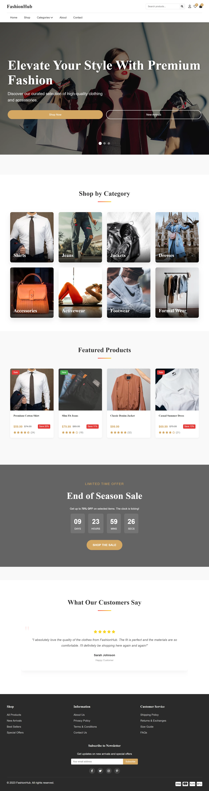
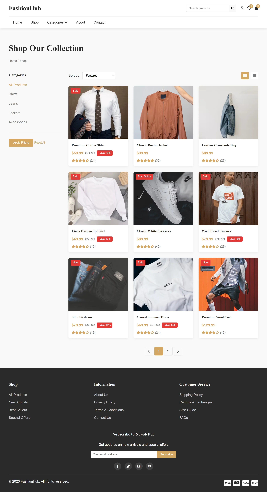
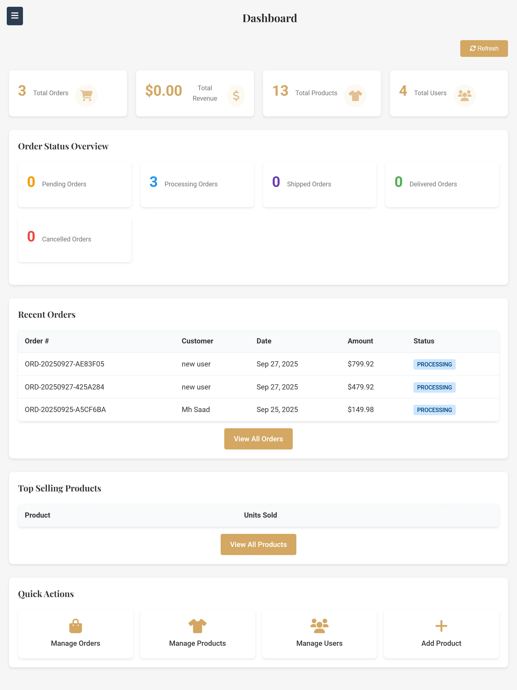
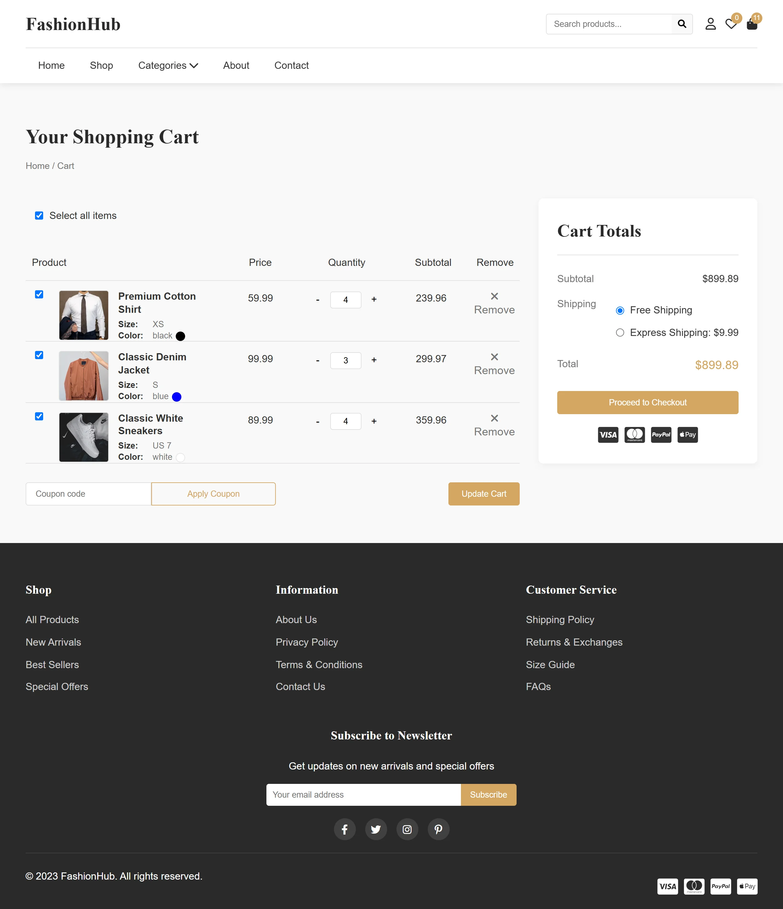

Executive Summary
FashionHub was developed as a direct response to the limitations found in bloated, out-of-the-box CMS solutions. The objective was to build an ultra-fast, bespoke e-commerce platform that bridged the gap between aesthetic product discovery and rigorous backend retail operations.
Serving as a comprehensive end-to-end retail ecosystem, FashionHub manages everything from dynamic catalog rendering and secure user authentication to persistent shopping carts and a streamlined, PCI-compliant payment integration via Stripe.
Constructed entirely from the ground up with a robust API-first PHP architecture, backed by a highly normalized MySQL database, and featuring a dedicated Node.js microservice for specialized payment handling, FashionHub demonstrates the immense capability of hybrid stacks in achieving top-tier performance and security in modern online retail.
The Problem Space
Many contemporary monolithic e-commerce templates provide rigid architectures that are notoriously difficult to scale, secure, or customize heavily without encountering severe performance bottlenecks. The challenge with FashionHub was to build a highly adaptable framework that could securely handle complex data relationships without relying on generic CMS plugins. Specific systemic challenges included:
- Decoupling Logic from UI: Creating an API-first backend to completely decouple the frontend rendering logic from server-side operations, allowing for asynchronous, SPA-like interactions.
- Complex Inventory Modeling: Designing an intuitive yet powerful Admin Panel for real-time inventory management, order state tracking, and customer relationship monitoring.
- Frictionless Authentication: Implementing secure OAuth 2.0 social authentication flows (Google and Facebook) alongside traditional login without exposing the platform to session hijacking.
- Payment Security: Integrating a secure, PCI-compliant checkout workflow using Stripe while preventing the PHP application from directly handling sensitive credit card tokens.

Product Vision & Strategy
The vision was definitive: build a remarkably fast, relentlessly secure, and easily navigable online store. By adopting an API-first mentality for the custom PHP backend, the platform delivers optimized JSON payloads to the frontend. This drastic reduction in synchronous page reloads provides a silky-smooth user experience synonymous with enterprise-grade web applications.
Core Philosophy: Security by Design
Security and user experience are not mutually exclusive. From enforcing parameterized SQL statements at the database abstraction layer to seamless OAuth integrations and HttpOnly session cookies, every feature was engineered to build absolute consumer trust while drastically reducing friction in the purchasing funnel.
System Architecture & Tech Stack
FashionHub utilizes a distributed, service-oriented approach to meticulously manage different domain concerns, ensuring that no single component becomes a catastrophic bottleneck:
The API Nerve Center (`api/`): Rather than generating raw HTML, the PHP backend acts as a RESTful interface. Endpoints such as `get_products.php`, `update_cart.php`, and `create_order.php` validate incoming requests via strict schemas, execute business logic, and return standard JSON responses.
The Payment Microservice: To handle the complex cryptographic and webhook requirements of Stripe securely, a dedicated Node.js server (`node.js`) was implemented. This service processes payment intents and webhooks entirely decoupled from the core PHP application, minimizing the attack surface and ensuring PCI compliance.
Database & Data Modeling
A rigorously normalized MySQL schema forms the unbreakable foundation of the platform. Key entities include Users, Products, Variants, Orders, Order Items, and Addresses.
This relational model ensures that when a cart converts to an order, it is executed with absolute transactional integrity. Even if a product's price or description changes in the future, the historical order records the exact snapshot of pricing and metadata at the precise moment of purchase, a critical requirement for financial auditing.

Security & Authentication Subsystems
Security was approached holistically, anticipating modern web vulnerabilities:
- OAuth 2.0 Integration: Secure social logins leveraging `league/oauth2-google` and `league/oauth2-facebook` streamline user onboarding while offloading password management risks.
- Environment Management: Strict isolation of infrastructure secrets using `vlucas/phpdotenv`. Credentials are never hardcoded or committed to version control.
- SQL Injection Prevention: 100% utilization of PDO (PHP Data Objects) prepared statements. Raw variables are never concatenated into SQL strings under any circumstance.
- Session Hardening: Sessions are secured with strict cookie configurations, mitigating Cross-Site Scripting (XSS) and Cross-Site Request Forgery (CSRF) vectors.
Administrative Operations
Operating entirely behind a strict authorization wall, FashionHub features a formidable administrative dashboard. Store operators can effortlessly manage user roles, audit complex order histories, execute refunds, and update product catalogs in real-time.
This absolute separation of administrative business logic ensures that the consumer-facing application remains exceptionally lightweight and focused purely on speed and conversion optimization.

Engineering Challenges & Solutions
The Challenge: Integrating a modern Stripe checkout flow into a traditional PHP session architecture posed a unique synchronization challenge. The application needed to initiate a secure transaction without risking PCI compliance violations by passing raw card data through the PHP server.
The Solution: I engineered a hybrid, asynchronous approach. The frontend collects intent via the PHP session, which then securely requests a specialized payload from the Node.js payment microservice to generate a `client_secret`. Finally, the application utilizes Stripe Elements entirely on the client-side to finalize the transaction. The Node server then listens for asynchronous webhooks from Stripe to verify payment completion before instructing the PHP database to mark the order as 'Paid'.

Project Outcome & Impact
FashionHub stands as a comprehensive, highly scalable e-commerce framework. It successfully marries the battle-tested reliability and rapid deployment capabilities of PHP with the asynchronous, high-performance power of Node.js for specialized payment operations.
The resulting architecture is a highly responsive, fiercely secure, and easily administrable fashion marketplace that delivers a premium shopping experience. It validates the capability to build bespoke enterprise-grade solutions without the massive overhead of traditional commercial monoliths.